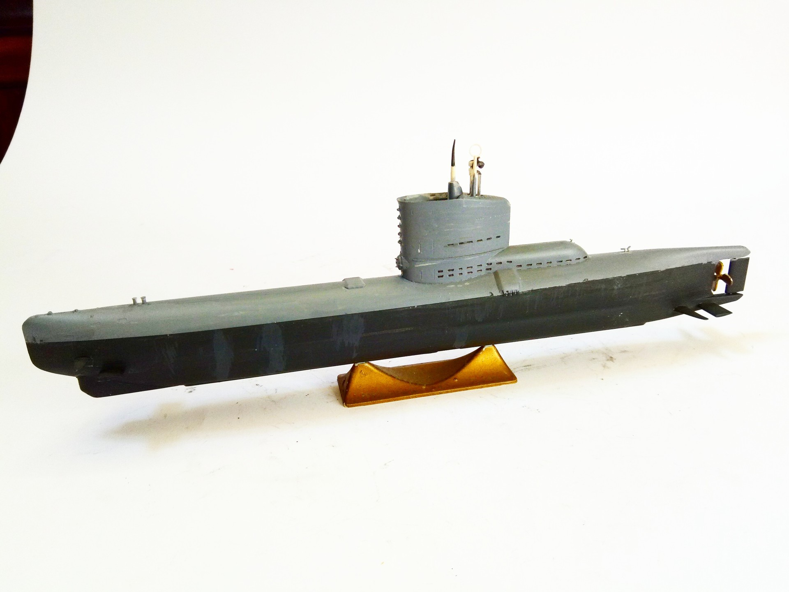

Navi · scale model archive
U-Boot Typ XXIII
U-Boot Typ XXIII — Kit: ICM. Sxale: 1/144 U2322 April 1945, very advanced coastal U-boot #1/144 #ICM

Photo gallery
English description
Sxale: 1/144
U2322 April 1945, very advanced coastal U-boot
#1/144 #ICM
Descrizione italiana
U2322 aprile 1945, very avanzato coastal U-boot.